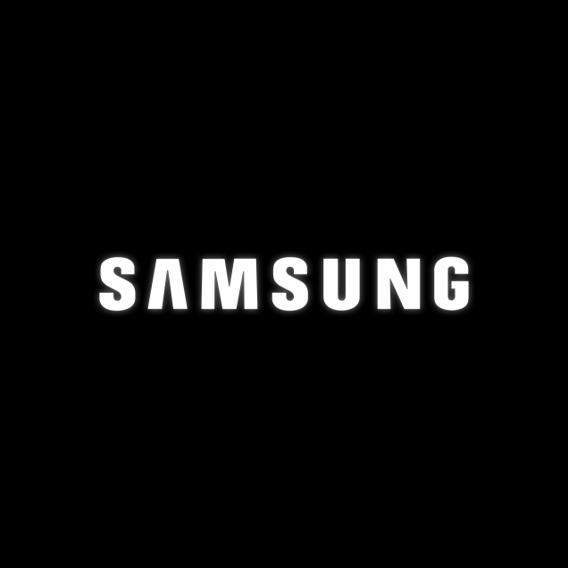
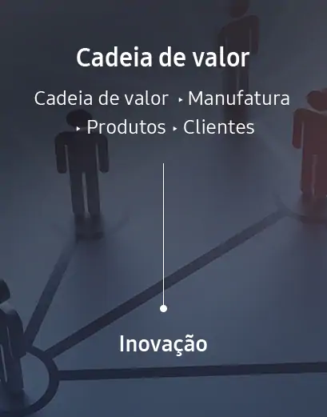

A Samsung nasceu na Coreia do Sul em 1938. Fundada por Byung Chull Lee, a principal função da empresa na época era a exportação de alimentos para a China. Em poucos anos, a Samsung ampliou os negócios, passando a atuar com produção de açúcar e seguros. Na década de 1960, a companhia inaugurou, também, uma loja de departamentos, um canal de televisão e um jornal.
A divisão de produtos eletrônicos, pela qual a empresa é mundialmente conhecida atualmente, surgiu em 1969, com a produção de televisores e, posteriormente, de geladeiras e máquinas de lavar. O crescimento da empresa levou os negócios para a fabricação de monitores de computadores, aparelhos celulares, tablets, robôs, entre tantos outros produtos tecnológicos.
Os valores que definem a Samsung são o cuidado com as pessoas, a excelência, mudança, integridade e prosperidade mútua. Sua visão é "inspirar o mundo, criar o futuro", buscando contribuir para a melhora da sociedade. A companhia preza pelo respeito aos valores para manter os negócios sólidos. Segundo a empresa, toda decisão tomada está relacionada aos valores e a um rigoroso código de conduta. A Samsung chegou ao Brasil em 1986 com duas linhas de produtos: monitores e disco rígido. Com a rápida ascenção das operações brasileiras, a companhia passou a investir em unidades de fabricações locais, aumentando o portfólio disponível no país. Hoje, a Samsung conta, também, com centros de pesquisa e desenvolvimento tecnológico e emprega mais de 2 mil funcionários em solo brasileiro.
Na Samsung, nossa gestão de sustentabilidade visa criar valores integrados. Não apenas criamos valores econômicos ao maximizar lucros e valores para acionistas como também assumimos uma maior responsabilidade como cidadãos globais visando criar valores sociais. Ao entregar produtos e serviços inovadores na cadeia de valor que são baseados nos principais valores que estimamos na Samsung, geramos retornos nas esferas econômica, social e ambiental. Monitoramos os impactos financeiros e não financeiros que exercemos sobre a sociedade em todo o processo para que possamos maximizar nossos impactos positivos enquanto minimizamos quaisquer negativos.
|  |
|---|